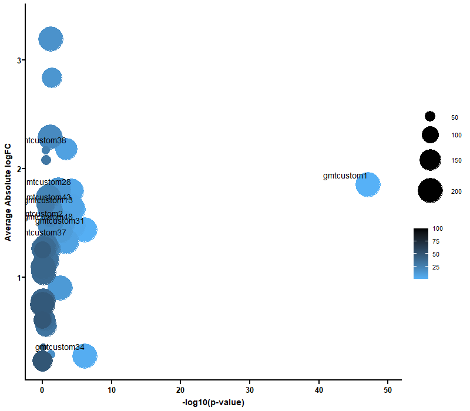
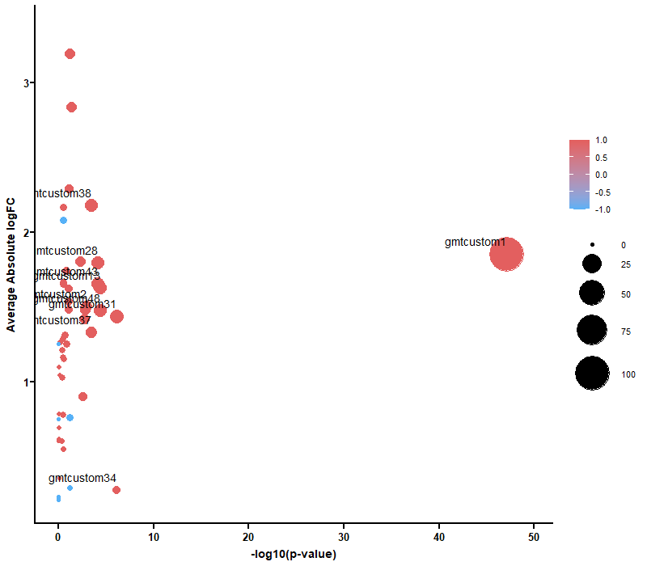
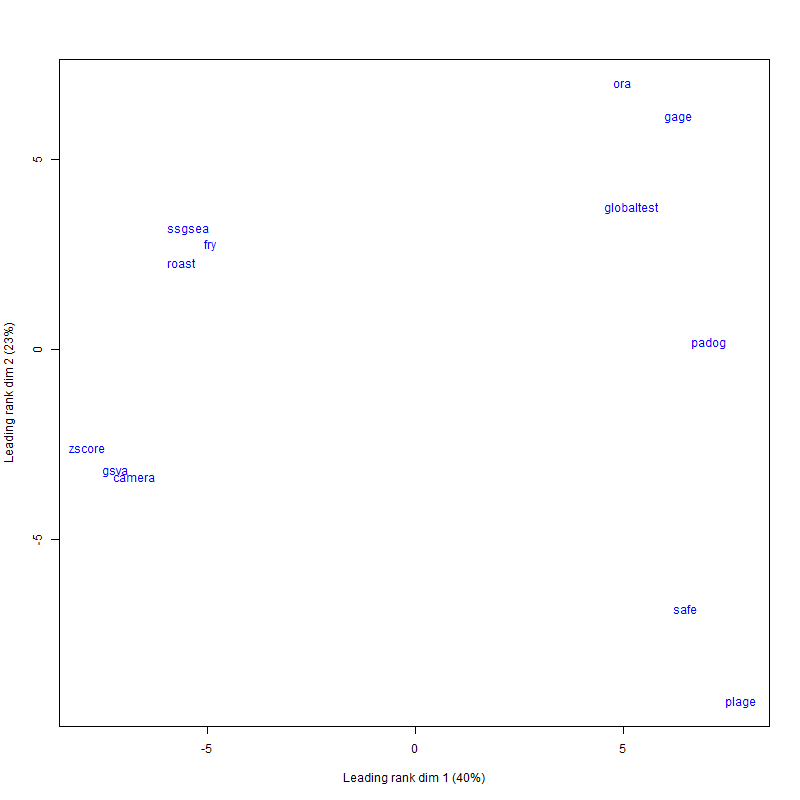
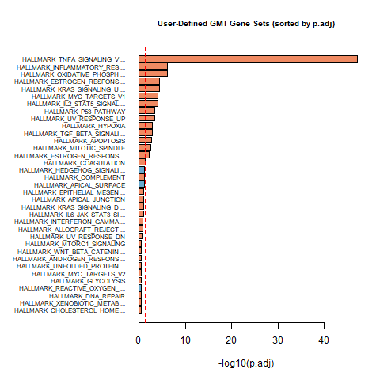

|  Summary plot based on gene set rank and size Download pdf file |  Summary plot based on regulation direction and significance Download pdf file |
|  MDS plot for the gene set ranking in different base methods. Download pdf file |  Summary plot based on gene set rank and size Download pdf file |